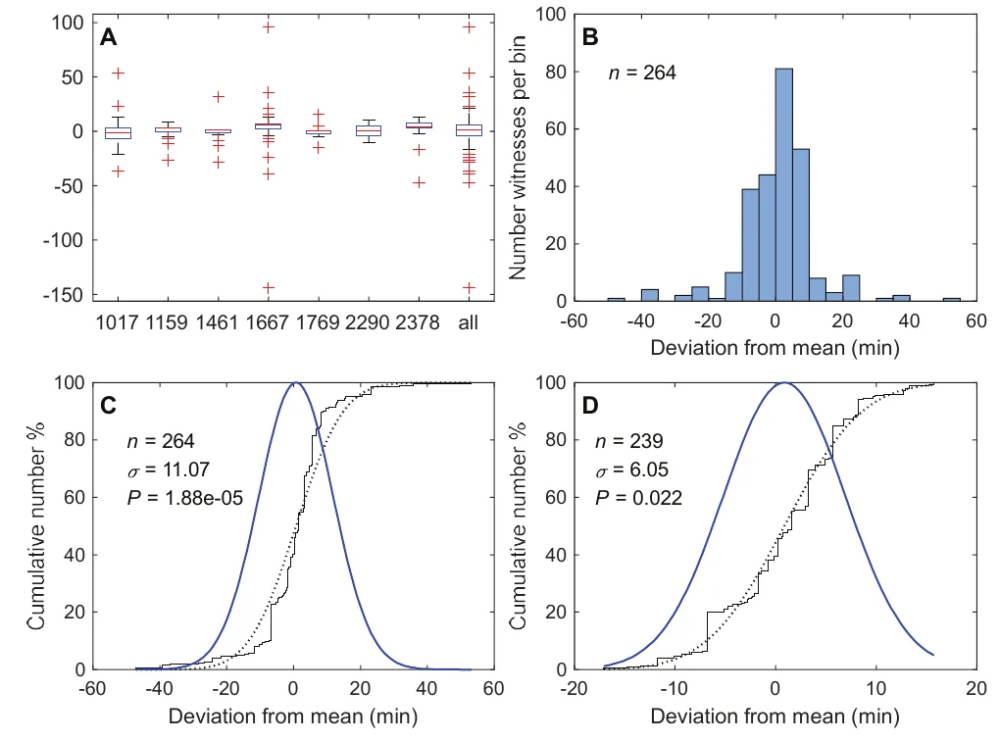
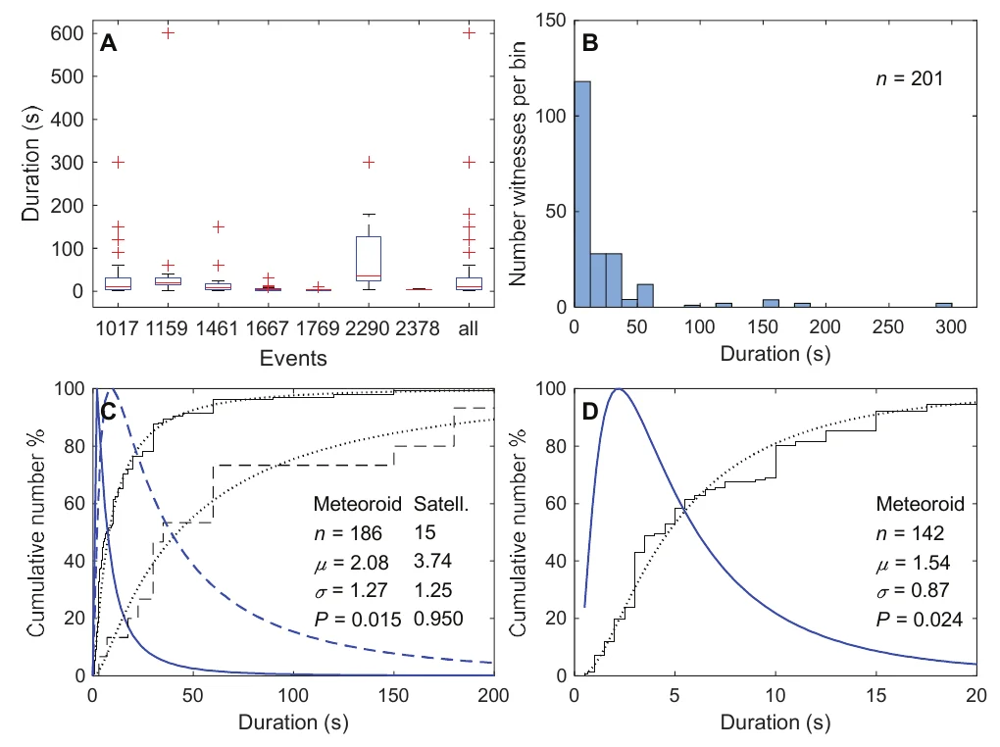
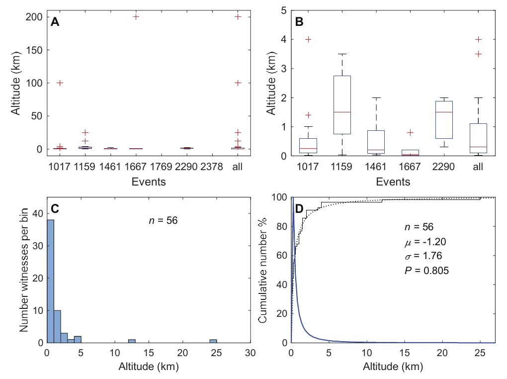
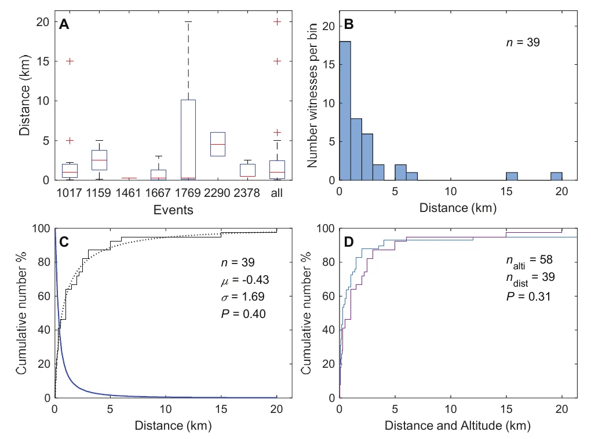

Les réactions d'observateurs face à des phénomènes connus ayant de multiples témoins constituent un bon test de leur capacité à décrire avec exactitude des événements inhabituels, brefs et inattendus. Nous avons analysé statistiquement environ 300 récits de 7 rentrées atmosphériques de météoroïdes et de satellites signalées à la police française de , et estimé quantitativement la fiabilité des témoins pour une douzaine de caractéristiques spatiales, temporelles et structurelles. Sur une échelle de 0 à 1, la fiabilité est pratiquement nulle pour les données métriques et la direction du mouvement, qui ne peuvent en général pas être déterminées à partir des données sensorielles, et varie de 0,5 à presque 1 pour les caractéristiques directement perceptibles. La fiabilité des témoins n'est pas une notion simple, car elle dépend fortement des caractéristiques étudiées, de la précision attendue et des contraintes méthodologiques. Ce n'est pas non plus une notion statique, car elle peut être améliorée en aidant les témoins à fournir des informations objectives (par exemple des données angulaires plutôt que métriques).
Dans quelle mesure des observateurs humains sont-ils capables de décrire avec exactitude un phénomène inhabituel auquel ils sont exposés de manière inattendue et relativement brève ? Pour répondre à cette question, il faut pouvoir comparer ce que les observateurs ont perçu, ou plus précisément ce qu'ils disent avoir perçu, avec les caractéristiques connues du phénomène. Une approche possible, qui a l'avantage de s'appuyer sur les vastes ressources de la psychologie expérimentale, consiste à présenter au sujet des stimuli artificiels contrôlés par l'expérimentateur en laboratoire (par exemple Jimenez, Manuel: Les phénomènes aérospatiaux non-identifiés et la psychologie de la perception, Note technique n° 10, Toulouse, GEPAN, CNES, , chapitre 3, pp. 59-102). Une autre approche, moins précise mais plus proche des conditions naturelles, consiste à analyser comment des observateurs décrivent des phénomènes naturels ou artificiels connus dont ils se trouvent être témoins. Nous suivrons ici cette seconde approche, fondée sur les rentrées atmosphériques de météoroïdes ou de satellites artificiels (charges utiles et fusées), déjà illustrée par quelques études antérieures Drake, Frank D.: “On the Abilities and Limitations of Witnesses of UFO’s and similar Phenomena”, in Carl Sagan & Thornton Page (éds.): UFOs – A Scientific Debate, Ithaca (New York), Cornell University Press, , pp. 123-182 Jimenez, Manuel: Témoignage d’ovni et psychologie de la perception, thèse de doctorat, université Montpellier 3, Cette étude s'appuie sur les procès-verbaux de police de 18 rentrées atmosphériques de la période , dont deux (#1017 et #1159, voir ci-dessous) figurent aussi dans notre échantillon. Jimenez, Manuel: La psychologie de la perception, Paris, Flammarion, . Ces corps qui se consument dans l'atmosphère sont visibles depuis le sol comme des lumières mobiles plus ou moins spectaculaires selon leur vitesse et leur taille. Les observateurs de rentrées atmosphériques, qu'ils les identifient comme telles ou non, sont dans des conditions semblables à celles d'autres phénomènes rares et moins facilement identifiables, appelés ovnis ou PAN, et fournissent donc des informations de référence pour l'évaluation des signalements de PAN.
Les signalements disponibles de rentrées atmosphériques fournissent de nombreuses informations sur les phénomènes observés et leurs conditions d'observation. Nous examinerons d'abord comment les observateurs rapportent, ou omettent de rapporter, diverses caractéristiques de ces événements, qu'elles soient spatio-temporelles (comme l'heure, la durée, la hauteur, la distance et la direction) ou intrinsèques (comme la structure et les couleurs). Nous évaluerons ensuite en quoi les caractéristiques perçues diffèrent des caractéristiques réelles des phénomènes, telles qu'on les connaît par la littérature scientifique ou qu'on les déduit des signalements eux-mêmes. Puis, en définissant la fiabilité pour une caractéristique donnée comme le rapport du nombre de descriptions correctes au nombre total de descriptions, nous proposerons des méthodes pratiques pour mesurer quantitativement la fiabilité des témoins oculaires pour diverses caractéristiques. Nous ferons aussi quelques brèves comparaisons avec des études antérieures.
Avant d'étudier leur contenu, donnons un aperçu des récits des observateurs. Ils ont été extraits d'un ensemble de signalements réunis par le GEIPAN, le groupe d'étude des PAN du Centre national d'études spatiales (CNES). Au cours de la période couverte par la présente étude, le GEIPAN a reçu plus de 2200 signalements portant sur environ 1700 événements PAN impliquant plus de 5000 témoins. Les événements qui intéressent la présente étude sont des rentrées atmosphériques ayant plusieurs témoins. Nous avons trouvé 215 rentrées atmosphériques, mais seulement 16 ayant 10 observateurs ou plus. Cependant, les trois quarts des signalements correspondants ont été produits par un seul événement, la rentrée d'un lanceur survenue le . Cet événement massif nécessiterait une analyse spécifique, aussi n'a-t-il pas été inclus dans cette étude. Nous avons tiré au hasard 7 des 15 autres événements pour une analyse détaillée.
Le tableau 1 résume les principales caractéristiques des 7 rentrées atmosphériques retenues. Six d'entre elles ont été interprétées comme des météoroïdes et une comme un satellite artificiel. Elles ont donné lieu à 116 signalements fondés sur les observations de plus de 350 témoins (Nt). La majorité (83 %) des témoignages recueillis (Nr) provenaient de la Gendarmerie nationale, l'une des deux forces de police nationales en France, chargée des zones rurales et périurbaines. Les autres témoignages provenaient de l'Aviation civile (7 %), de la police urbaine (1 %) et directement des observateurs (9 %). La différence entre témoignages recueillis (Nr) et détaillés (Nd) résulte de notre exclusion des observateurs qui n'ont pas fourni leur propre description mais se sont bornés à confirmer les déclarations d'un autre observateur ; cela signifie que seules les déclarations explicites ont été prises en compte. Nous avons aussi retiré de Nd un signalement qui ne décrivait vraisemblablement pas une rentrée atmosphérique (voir section suivante), obtenant ainsi les témoignages effectivement utilisés (Nu = 283).
| Événement | Date | Heure | Nt | Nr | Nd | Nu | Ndp | Nco | Objet |
|---|---|---|---|---|---|---|---|---|---|
| #1017 | 18:37 | 144 | 125 | 117 | 117 | 25 | 70 | météoroïde | |
| #1159 | 22:57 | 52 | 45 | 35 | 35 | 11 | 22 | météoroïde | |
| #1461 | 22:28 | 30 | 26 | 26 | 26 | 7 | 19 | météoroïde | |
| #1667 | 21:24 | 75 | 67 | 65 | 64 | 11 | 49 | météoroïde | |
| #1769 | 07:15 | 13 | 13 | 11 | 11 | 3 | 10 | météoroïde | |
| #2290 | 22:55 | 23 | 16 | 16 | 16 | 12 | 16 | satellite | |
| #2378 | 18:47 | 19 | 14 | 14 | 14 | 9 | 14 | météoroïde | |
| Total | 356 | 306 | 284 | 283 | 200 |
Événement, identifiant de l'événement. Date, date de l'événement. Heure, heure légale approximative de l'événement (voir la section sur l'heure pour plus de détails). Nt, nombre d'observateurs connus. Nr, nombre d'observateurs rencontrés par les enquêteurs. Nd, nombre de témoignages détaillés (les observateurs n'ayant fait que confirmer un autre témoin ont été exclus). Nu, nombre de témoignages utilisables (une observation sans rapport avec l'événement #1667 a été exclue). Ndp, nombre de départements d'où l'événement a été signalé. Nco, nombre de communes ayant des observateurs. Objet, tous les événements résultent de météoroïdes sauf #2290 (lanceur russe).
Le tableau 1 montre que les phénomènes ont été observés pendant les heures nocturnes dans des zones géographiques dont la taille peut être estimée par le nombre de départements où se trouvaient les témoins (les départements sont des unités administratives d'environ 6000 km², correspondant à une surface circulaire d'environ 90 km de diamètre). Ces zones sont bien corrélées avec le nombre d'observateurs et le nombre de communes où ils se trouvaient (les communes sont les plus petites unités administratives, d'un diamètre dix fois moindre que celui d'un département). Selon l'événement, la zone de visibilité comprenait de 3 à 25 départements (environ 3 % à 27 % de la France métropolitaine), ce qui indique que la visibilité des phénomènes n'était pas du tout équivalente, de nombreux facteurs comme la luminosité, la durée, la couverture nuageuse, le moment de la journée, etc. contribuant à la visibilité. D'autres aspects des événements sont décrits dans les sections suivantes, consacrées à leurs diverses caractéristiques. Sauf indication contraire, toutes les statistiques (nombres et pourcentages arrondis à l'entier le plus proche) sont données par rapport aux 283 témoignages utiles.
Bien que les témoins aient généralement rapporté une lumière ou un ensemble de lumières se déplaçant à vitesse constante dans le ciel, dans huit récits la lumière a été perçue comme immobile pendant tout ou partie de l'observation. Cela peut se produire si l'objet suit une trajectoire dirigée exactement vers le témoin, mais ce cas devrait être rare, et les signalements suggèrent d'autres explications, comme suit.
Quatre témoignages qui ne présentent pas d'incohérence de durée résultent probablement de perceptions erronées. Le propre mouvement du témoin en voiture dans le premier cas, la brièveté d'une lumière « apparemment immobile » vue pendant 2 secondes seulement dans le deuxième, et la prétendue « stabilisation » d'une lumière mobile avant qu'elle ne s'éteigne dans le troisième, sont compatibles avec cette hypothèse. Le quatrième exemple sera discuté dans l'avant-dernière section.
Quatre autres témoignages de phénomènes immobiles présentent aussi des incohérences d'heure et/ou de durée. Dans l'événement #1667, un témoin a vu tomber le météoroïde puis, avec son ami, une lumière blanche apparemment immobile au sol pendant 20 min – un tracteur au travail dans un champ selon l'enquête de police. La confusion de deux phénomènes indépendants se traduit ici par des divergences de mouvement et de durée. Environ une heure après l'heure la plus probable de l'événement #1017, deux témoins ont rapporté une lumière bleue intermittente dans le ciel puis, quelques secondes plus tard, une sphère rouge immobile pendant 2 min. La lumière bleue est compatible avec d'autres descriptions du météoroïde #1017, ce qui laisse envisager que la sphère rouge ait été autre chose, la Lune par exemple ; les témoins rejettent cette interprétation mais n'indiquent pas la direction d'observation, ce qui empêche toute vérification. Dans le dernier témoignage, 80 min après la chute du météoroïde #1667, trois lumières formant un triangle ont été vues immobiles pendant 30 min. Dans ce signalement, au moins trois éléments (immobilité, heure et durée) sont incompatibles avec l'hypothèse du météoroïde. C'est pourquoi ce récit a été retiré de notre échantillon final (d'où la différence entre Nd et Nu), ce qui évite de mélanger les erreurs des témoins (le signal que nous voulons étudier) avec une sélection erronée, de notre part, de phénomènes sans rapport (le bruit).
Tous les observateurs donnent la date de l'événement. Dans 5 cas (2 %), cette date est fausse d'un jour (le lendemain est donné), bien que le jour de la semaine soit correct dans l'un de ces signalements. L'heure est la deuxième caractéristique la plus souvent rapportée par les témoins (dans 95 % des témoignages utilisables). Cependant, la variable qui intéresse la présente étude n'est pas l'heure en elle-même, mais la différence entre l'heure donnée par l'observateur et l'heure réelle de l'événement. Pour certains événements, l'heure réelle est connue approximativement grâce à des observateurs a priori fiables (voir ci-dessous), mais ce n'est pas toujours le cas ; nous avons donc préféré prendre comme référence la moyenne de toutes les heures rapportées pour un événement donné.

Différentes vues des écarts à l'heure moyenne sont présentées dans la figure 1. Les écarts sont représentés sous la forme de boîtes à moustaches dans la figure 1A, d'abord séparément pour chaque événement de gauche à droite, puis pour tous les événements ensemble. La plupart des écarts sont relativement faibles et semblables dans tous les événements, comme le montrent les hauteurs des rectangles centraux qui contiennent la moitié des écarts de chaque événement, bien que l'on trouve des écarts relativement importants (de 3 à 9 par événement, dessinés en croix rouges). La figure 1B montre tous les écarts ensemble sous la forme d'un histogramme dont la forme en cloche est compatible avec l'idée que les écarts d'heure suivent une courbe de Gauss (aussi appelée loi normale), description classique des erreurs de mesure. La loi de Gauss qui s'ajuste le mieux aux données est représentée de deux façons dans la figure 1C : par une courbe en cloche (dite PDF, en bleu), que l'on peut comparer à l'histogramme 1B, et par une courbe sigmoïde (CDF, courbe pointillée) qui a l'avantage d'être directement comparable aux données empiriques (voir la courbe en escalier noire continue). Cependant, cette meilleure solution d'ajustement, d'écart-type 11 min, n'est pas satisfaisante, car la différence entre les CDF théorique (pointillée) et empirique (continue) est trop grande pour résulter de fluctuations aléatoires (voir le test statistique dans la légende de la figure 1C). Si l'on ne prend en compte que les écarts d'heure inférieurs à 20 min (qui comprennent 90 % des valeurs), la courbe en cloche d'écart-type 6 minutes devient une description acceptable (voir figure 1D). Ce résultat suggère qu'à côté de la majorité des observateurs, qui donnent l'heure avec une erreur ne dépassant pas 20 min, il existe une minorité de personnes (10 %) dont les estimations d'heure, moins précises, suivent une autre loi de Gauss d'écart-type bien plus grand.
Quoi qu'il en soit, en ne considérant que la distribution empirique, les pourcentages de témoins qui donnent l'heure avec une différence d'au plus (plus ou moins) 10, 15 ou 30 min sont respectivement de 18, 11 et 4 %. Nous pouvons retenir ±30 min comme le plus pertinent, puisque cela correspond à une plage d'une heure. Ajoutons une mise en garde : il faut bien voir que nous n'étudions pas réellement l'estimation de l'heure par les observateurs, mais l'heure enregistrée par les enquêteurs et interprétée par l'auteur. Les erreurs d'enregistrement et d'interprétation s'ajoutent à celles commises par des observateurs imprécis.Par exemple, dans l'événement #1667, l'heure (19:00) donnée par deux témoins est ambiguë, car elle peut s'appliquer soit au début du dîner, soit à l'observation du météore. J'ai retenu l'heure du dîner car, en l'absence d'autres témoins indépendants, comme dans la plupart des signalements de PAN, cette ambiguïté aurait été difficile à lever.
La même méthode peut être appliquée à la durée de l'événement, qui est donnée par 71 % des témoins, souvent sous forme de fourchettes comme « 10-15 secondes » (nous avons
pris la moyenne des extrêmes) et parfois comme « quelques secondes » (que nous avons interprété comme 3 s). Il
apparaît alors que la rentrée du lanceur (#2290), d'une durée médiane de 35 s, a été visible bien plus longtemps que
les météoroïdes (tous les autres
événements), dont la durée médiane est de 8 s (de 3 à 20 s). Cela concorde bien avec les durées trouvées dans la
littérature.Pour Hendry , la durée des météores va d'une seconde
jusqu'à vingt secondes
tandis que les rentrées de satellites sont généralement observées pendant plus de dix
secondes
(d'après 113 signalements). Typiquement, les météores sont vus pendant quelques
secondes
Jeanne, Simon: Méthode
d’analyse statistique appliquée au réseau d’observation européen des météores FRIPON, thèse de doctorat,
Observatoire de Paris, ou d'une fraction de seconde jusqu'à
peut-être 10 secondes,
mais jamais
plus de 4 min 40 s, Alessandri, Robert: Durée
des rentrées atmosphériques et des météores, tandis que les
rentrées de satellites sont vues de peut-être 20 secondes à une minute, mais ces durées pourraient aussi être plus
longues ou plus courtes,
sans
dépasser 3 min Alessandri, Robert: Durée
des rentrées atmosphériques et des météores, . Ainsi, la durée
environ quatre fois plus longue des satellites par
rapport aux météoroïdes suffit à être perçue par l'ensemble des témoins.
Pour aller plus loin, les durées sont présentées dans la figure 2 avec les mêmes méthodes graphiques que dans la figure 1. Non seulement la médiane, mais aussi l'écart interquartile (103 s) est bien plus grand pour le lanceur #2290 que pour les météoroïdes (17 s, de 1 à 26 s ; figure 2A). La différence la plus frappante avec les écarts d'heure apparaît dans la figure 2B, car l'histogramme n'est pas symétrique, les durées très courtes étant plus fréquentes que les plus longues, ce qui signifie que les durées ne peuvent pas être décrites par une loi de Gauss (normale), mais exigent une loi asymétrique. C'est ce que montre plus précisément la figure 2C, qui distingue les météoroïdes (les six ensemble) et le lanceur ; nous avons trouvé que les courbes PDF les mieux ajustées, calculées à partir des escaliers empiriques, sont des lois log-normales.
Une variable suit une loi log-normale si son logarithme suit une loi normale. Cela signifie que, alors que les heures se mesurent sur une échelle arithmétique ordinaire (graduée 0, 1, 2, etc. par additions successives) et que leur valeur centrale est donnée par leur moyenne arithmétique, les durées se mesurent plus adéquatement sur une échelle géométrique (graduée 1, 10, 100, etc. par multiplications successives) et leur valeur centrale est donnée par leur moyenne géométrique (racine nième de leur produit) et leur médiane, qui est µ* = 8 s pour les météoroïdes et 42 s pour le lanceur #2290. Comme dans la figure 1C, où le retrait des valeurs les plus extrêmes améliore l'ajustement à une loi de Gauss, le retrait des durées supérieures à 20 s dans le sous-ensemble des météoroïdes améliore l'ajustement à une loi log-normale de µ* = 5 s (figure 2D), ce qui suggère là aussi que les durées les plus longues obéissent à une loi d'écart-type plus grand.

Il découle des propriétés de la loi log-normale et de la quasi-égalité des écarts-types des météoroïdes et des
satellites (fig. 2C) que, pour les deux types d'événements, 29 % des témoins donnent des durées supérieures ou égales
à 2µ*, 10 % à 5µ* et 3 % à 10µ*. Si l'on définit les valeurs aberrantes comme dans les boîtes à moustaches (voir les
légendes de la figure 1A), les durées supérieures à 45 s pour les météoroïdes et à 180 s pour le lanceur #2290 sont
anormales. Cette définition est raisonnable, car elle correspond à des durées environ cinq fois supérieures aux
moyennes géométriques µ*. Elle donne n = 26 valeurs aberrantes pour les météoroïdes et 5 pour le lanceur, de sorte
que 15 % des observateurs peuvent être considérés comme non fiables selon cette règle.Drake Drake, Frank D.: “On the
Abilities and Limitations of Witnesses of UFO’s and similar Phenomena”, in Carl Sagan & Thornton Page
(éds.): UFOs – A Scientific Debate, Ithaca (New York), Cornell University Press, , pp. 123-182 conclut, à partir de 113 entretiens de témoins de deux
bolides brillants en , que les estimations de la durée du bolide… étaient
remarquablement exactes. Dans ces cas, il a duré quatre secondes, et les estimations étaient typiquement
comprises entre trois et cinq secondes, une performance remarquablement bonne. Les estimations du délai jusqu'au
bang supersonique étaient aussi à peu près justes
(entre 1 et 5 min, ce qui est correct à un facteur deux
près).
Les témoins ont observé un objet principal (unique ou plus grand que les autres ; 87 %), plusieurs objets de taille équivalente (7 %), une simple traînée sans objet associé (5 %), ou n'ont pas donné d'indication claire (2 %). Dans quatre événements (#1159, #1667, #1769, #2378), il n'y a qu'un seul objet ou, si plusieurs sont vus, l'un d'eux est plus grand que les autres. Pour les 3 autres événements, la proportion de témoins qui voient plusieurs objets semblables reste faible pour #1017 (8 %) et #2290 (13 %), mais est nettement plus élevée pour #1461 (31 %), qui est donc l'événement le plus singulier de ce point de vue.
L'objet principal est parfois accompagné de jusqu'à 3 objets secondaires plus petits pendant toute l'observation (3 %), ou est décrit comme se brisant en jusqu'à une douzaine de fragments (19 %), tandis que l'objet principal poursuit sa course. Certains observateurs parlent de désintégration ou d'explosion. La fréquence des désintégrations observées varie selon les événements, d'environ un tiers à très peu ou aucune. Vraisemblablement, cette caractéristique dépend de ce que l'observation du témoin commence avant ou après la fragmentation de l'objet. Si cette interprétation est correcte, l'observation d'une fragmentation devrait être corrélée à la durée de l'observation, ce qui est effectivement le cas.Pour les observations de courte durée, 16 témoins ont rapporté une fragmentation et 84 aucune ; pour les longues durées, ils étaient respectivement 29 et 73. Ainsi, on observe moins de fragmentations lors des observations courtes que lors des longues, et inversement pour l'absence de fragmentation. Cette corrélation est significative, avec une valeur P = 0,025 (test exact de Fisher).
La moitié des témoins ont décrit une traînée, le plus souvent derrière l'objet principal (ou les objets), parfois seule (5 %). Le mot traînée est le plus courant, mais on trouve aussi étincelles, queue, cône, lueur, faisceau, flamme, fumée, gerbe, projection, triangle, virgule, lumière. La proportion de témoins mentionnant une traînée est semblable d'un événement à l'autre (elle varie de 67 % à 82 %), sauf pour les météoroïdes #1017 et #1461, dont les traînées n'ont été vues que par 27 % des observateurs.
Les descriptions des objets, de leur fragmentation et de leurs traînées peuvent varier en raison de différences réelles entre les phénomènes, comme l'illustre l'événement #1461, pour lequel on a remarqué plus d'objets de taille semblable que dans les autres ; ou de différences dans les conditions d'observation, comme le suggère l'influence de la durée de l'observation. Faute de normes sûres pour juger de la vérité ou de l'erreur d'un témoin, la fiabilité est difficile à estimer. Cependant, comme pour le jour et l'heure, nous pouvons utiliser des étalons de substitution en nous appuyant sur les témoignages. Prenons l'exemple des fragmentations. Dans 4 événements (#1159, #1667, #1769 et #2378 ; 123 témoignages en tout), aucune fragmentation n'a été décrite (sauf par un témoin dans #1159, dont nous ne tiendrons pas compte par méthode). Dans les trois autres événements, environ un tiers des témoins (34 % pour #1017, 35 % pour #1461, 31 % pour #2290 ; 54 témoins en tout) ont rapporté une désintégration, ce qui est une preuve suffisante qu'elle s'est produite. Ainsi, 63 % des témoins ont correctement rapporté la présence ou l'absence d'une désintégration. Le même raisonnement appliqué aux traînées conduit à une fiabilité de 49 % ; mais de façon plus simple, puisque dans tous les événements une traînée a été mentionnée (par 7 témoins ou plus), conformément à ce qu'on attend, puisque tous les corps à grande vitesse produisent une traînée d'ionisation dans l'atmosphère.
Les couleurs de l'objet principal sont indiquées par 79 % des témoins. Ce pourcentage varie cependant selon les événements, de 81 à 95 % pour 4 événements et de 41 % à 55 % pour 3 événements (#1159, #2290 et #1769). Les témoins utilisent un vocabulaire relativement riche de 40 termes, comprenant des couleurs primaires (rouge, vert et bleu), secondaires (jaune, orange, brun, violet, etc.) et tertiaires comme « bleu-vert », etc., vocabulaire encore enrichi par des indications d'intensité et de saturation. La moitié de ces 40 termes se trouvent dans deux témoignages ou plus, et l'autre moitié dans un seul. Les couleurs de la traînée diffèrent à plusieurs égards de celles de l'objet principal : elles sont moins souvent rapportées (elles ne sont mentionnées que par 49 % des observateurs qui mentionnent une traînée), et la proportion de traînées dont la couleur est indiquée varie moins d'un événement à l'autre (de 43 à 64 %, sauf #1461 avec 25 %). Le nombre de couleurs mentionnées est aussi plus petit (13).
Comme pour plusieurs autres caractéristiques, l'analyse des couleurs est entravée par le manque de données de
référence,C'est une situation courante. Drake note, à propos des deux événements de qu'il a étudiés, que nous ne savons pas avec certitude de quelle couleur étaient
les objets
Drake, Frank D.: “On the Abilities and Limitations of
Witnesses of UFO’s and similar Phenomena”, in Carl Sagan & Thornton Page (éds.): UFOs – A
Scientific Debate, Ithaca (New York), Cornell University Press, , pp.
123-182. puisque la couleur n'a été rapportée brièvement que par un seul observateur qualifié,
l'astronome Paul Couteau, de l'observatoire de
Nice. Il a décrit la traînée du météoroïde
#1017 comme verte et rouge,
typique de particules métalliques chauffées à très haute température qui se
détachent de la météorite sous l'effet du frottement et brûlent immédiatement.
Entretien dans
le Dauphiné Libéré, cité dans Passot, Xavier: J’ai vu un OVNI. Perceptions et
réalités, Paris, Le cherche midi, , p. 20. On ne peut donc
s'appuyer que sur les ressemblances et les différences entre les descriptions de couleur d'un même événement. La
grande palette de couleurs suggère que les différences l'emportent sur les ressemblances, et pourrait confirmer la
plausibilité de la conclusion de Drake selon laquelle l'œil, peut-être surtout l'œil adapté à l'obscurité,
lorsqu'il est confronté à une lumière vive et inattendue, peut percevoir n'importe quelle couleur
, de sorte que
les couleurs rapportées n'ont aucune signification.
Drake, Frank D.: “On
the Abilities and Limitations of Witnesses of UFO’s and similar Phenomena”, in Carl Sagan & Thornton Page
(éds.): UFOs – A Scientific Debate, Ithaca (New York), Cornell University Press, , pp. 123-182
Afin de vérifier cette conclusion, nous avons simplifié la palette en remplaçant les couleurs tertiaires par la couleur primaire ou secondaire la plus fréquente qui les compose. Après réduction, il apparaît que les couleurs de traînée les plus souvent mentionnées pour l'événement #1017 sont le rouge, le vert et le blanc (71 % des témoins), en bon accord avec la description de Couteau. Cette confirmation peut donner un certain poids à la « couleur » réduite que nous avons trouvée le plus souvent pour la traînée, à savoir le blanc, avec deux exceptions, #1017 et #1461 (seuls deux témoins indiquent la couleur de la traînée, et ils sont en désaccord : l'un la voit rouge et l'autre jaune-vert). Il est intéressant de noter que l'aspect blanc de la traînée dans la plupart des événements pourrait expliquer pourquoi tant d'observateurs n'ont pas rapporté sa couleur, conformément à la notion technique selon laquelle le blanc et le gris ne sont pas des couleurs mais des nuances.
La même procédure appliquée à la couleur de l'objet principal (tableau 2) montre que les termes les plus souvent employés sont vert et blanc (#1017 et #1667), blanc et jaune (#1461), blanc et gris (#1159), et blanc et bleu (#1769). Pour ces deux derniers événements, leur nuance blanche ou grise a pu contribuer à leur pourcentage relativement faible de descriptions de couleur (colonne Aucune). Pour deux événements, #2290 (orange et rouge) et #2378 (orange et vert), aucune nuance blanche n'a été remarquée.
Les conclusions de Drake sur la vision des couleurs semblent donc trop négatives. En effet, les ressemblances entre les signalements d'un même événement ont fait émerger des couleurs ou nuances dominantes, et des fréquences de signalement plus faibles dans le cas des nuances blanches et grises. Les différences se manifestent dans la variété des termes employés, qui peut résulter de nombreux facteurs, neuronaux (œil et cerveau), psychologiques (attention, mémoire) et autres (signalement).
| Événement | Aucune | N | Couleurs principales | n | n% | Autres couleurs | I% |
|---|---|---|---|---|---|---|---|
| 1017 | 6 % | 140 | vert blanc rouge | 115 | 82 % | jaune bleu orange sombre brun rose | 18 % |
| 1159 | 59 % | 15 | blanc gris bleu | 11 | 73 % | sombre rouge | 27 % |
| 1461 | 19 % | 25 | blanc jaune vert | 17 | 68 % | bleu rouge | 32 % |
| 1667 | 10 % | 69 | vert blanc orange | 50 | 73 % | rouge jaune bleu argent or noir | 27 % |
| 1769 | 45 % | 6 | blanc bleu | 4 | 66 % | sombre vert | 34 % |
| 2290 | 50 % | 8 | orange rouge | 8 | 100 % | - | 0 % |
| 2378 | 18 % | 14 | orange vert | 11 | 79 % | rouge noir | 21 % |
| Moyenne | 77 % | 23 % |
Numéro de l'événement. Aucune, pourcentage de témoins n'indiquant ni couleur ni nuance. N, nombre total de termes employés par les témoins pour décrire les couleurs (après réduction) et les nuances. Couleurs principales, les deux couleurs réduites les plus fréquentes (plus le blanc) indiquées par au moins 2 témoins. n, nombre total de couleurs et de nuances mentionnées dans la colonne « Couleurs principales ». n% = n/N en pourcentage. Autres couleurs, autres termes décrivant des couleurs réduites et des nuances (en italique si employés par un seul témoin). I% = 100 – n%, pourcentage des couleurs et nuances mentionnées dans la colonne « Autres couleurs ». Dans les colonnes « Couleurs principales » et « Autres couleurs », les couleurs et nuances sont classées par fréquence décroissante.
Bien que l'altitude soit d'une nature tout à fait différente de l'heure et de la durée, commençons par l'étudier
avec les mêmes méthodes que pour ces variables (figure 3). L'altitude du phénomène est donnée, en mètres ou en
kilomètres, par 20 % seulement des observateurs,Wertheimer a trouvé, dans 13 des 30 signalements relativement
complets
de la rentrée de Zond IV, que
l'altitude ou la distance estimée était inférieure à 20 miles (32 km), ce qui est bien plus que dans notre
échantillon (20 %). une proportion si faible que, dans les deux événements ayant le moins d'observateurs
(#1769 et #2378, voir tableau 1), aucun d'eux n'a donné de valeur de hauteur. Dans les cinq événements restants, on
trouve deux valeurs aberrantes extrêmes (à 125 et 150 km), supérieures de 2 ordres de grandeur aux valeurs données par
les autres témoins (figure 3A). Une fois ces valeurs aberrantes retirées,
on obtient une vue plus claire des données (figure 3B), qui montre que les médianes comme les écarts interquartiles
(rectangles centraux) varient bien plus d'un événement à l'autre que dans le cas des heures et des durées, ce qui
peut aussi résulter en partie de fluctuations aléatoires dues au petit nombre de valeurs par événement. Néanmoins, le
dernier graphique (figure 3D) montre que les hauteurs de tous les événements ensemble s'ajustent très bien à une loi
log-normale de médiane µ* = 300 m.
Bien sûr, cette altitude perçue est complètement fausse. En réalité, la plupart des météoroïdes et des satellites artificiels se consument dans l'atmosphère à une altitude comprise entre 120 et 80 km Jeanne, Simon: Méthode d’analyse statistique appliquée au réseau d’observation européen des météores FRIPON, thèse de doctorat, Observatoire de Paris, American Meteor Society: Meteor FAQs and Fireballs FAQs Koten, P., Borovička, J., Spurný, P., Betlem, H. & Evans, S.: “Atmospheric trajectories and light curves of shower meteors”, Astronomy & Astrophysics, 428(2), , pp. 683-690. L'impression des observateurs est donc environ 300 fois plus petite qu'elle ne devrait l'être ! À l'évidence, l'altitude donnée par ces 20 % de témoins n'a aucune valeur objective. Pour cette variable, les signalements des témoins oculaires sont totalement non fiables.
Faut-il s'en étonner ? Pas vraiment, car l'altitude et la distance d'un objet vu dans le ciel ne peuvent être
déterminées sans connaissance préalable de sa taille ou de sa nature.Comme l'énonce Wertheimer : un objet inconnu, vaguement défini,
dans le ciel indifférencié, peut sembler avoir n'importe quelle taille ou se trouver à n'importe quelle distance,
selon les inférences faites par l'observateur.
Seules la hauteur et la taille angulaires
peuvent être déterminées. Malheureusement, cette règle simple ne semble pas connue de la plupart des observateurs et
des enquêteurs (seuls 4 % des témoins ont donné la hauteur en
degrés). Les deux seuls observateurs qui ont donné une altitude correcte sont l'astronome Jean CouteauL'auteur le nomme Paul Couteau dans la section Couleurs
ci-dessus. (150 km, événement #1017) et un pilote en vol (125 km,
événement #1667), sûrement (pour l'astronome) ou probablement (pour le pilote) en raison de leur connaissance
scientifique des météoroïdes. Les deux autres grandes valeurs (25 et 12 km, dans l'événement #1159) ont peut-être été
influencées par ce que les observateurs savaient de l'altitude des avions de ligne. À part ces 4 cas et peut-être 9
autres où l'objet a été ressenti comme « haut » (4 %), la plupart des observateurs ont jugé que sa hauteur était
inférieure à 5 km, ou « basse » (32 %).

Cependant, la perception humaine n'est pas aussi faillible que les résultats précédents pourraient le laisser penser, car non seulement de nombreux témoins oculaires expriment des doutes sur leur capacité à estimer la hauteur, mais, plus significativement, la majorité d'entre eux (56 %) ne fournissent aucune indication sur la hauteur, même qualitative (comme « haut » ou « bas »), ce qui est bien plus que pour l'heure (6 %) et la durée (29 %). Cette méfiance pourrait refléter un sentiment largement partagé que la hauteur ne pouvait pas être déterminée dans leurs conditions d'observation.
La distance du phénomène est donnée quantitativement (en mètres ou en kilomètres, 14 %) ou qualitativement (« proche » ou « lointain », 2,5 % chacun) par une minorité de témoins, tandis que la majorité préfère s'abstenir de toute indication (81 %). Les témoins sont donc encore plus réticents à donner une distance qu'une altitude. Cependant, pour ceux qui osent fournir une valeur quantitative, les résultats sont très semblables pour la distance et l'altitude (fig. 4), bien que 18 personnes seulement donnent les deux valeurs. La plupart des rentrées sont ressenties comme se produisant à moins de 5 km (figures 4A et 4B). Les distances suivent une loi log-normale de distance médiane d'environ 650 m (figure 4C), pratiquement identique à la distribution des altitudes (figure 4D).

Cette quasi-identité est en contradiction flagrante avec la réalité, car la distance est en général supérieure à l'altitude dans les rentrées atmosphériques. Un météoroïde qui entre dans l'atmosphère terrestre juste au-dessus d'un observateur (hauteur 90°) est à la plus courte distance possible (environ 100 km). À l'autre extrême, un météoroïde qui entre dans l'atmosphère près de l'horizon (hauteur 0°) est à la plus grande distance possible, car la courbure de la Terre limite la distance horizontale à laquelle il peut être vu avant de devenir invisible sous l'horizon. Un calcul géométrique élémentaire montre que la distance maximale est approximativement comprise entre 1000 et 1200 km. Ainsi, la distance peut être jusqu'à environ un ordre de grandeur supérieure à l'altitude, selon la hauteur du météoroïde au-dessus de l'horizon. En conséquence, l'écart entre la distance rapportée par les observateurs les plus naïfs et la distance réelle est encore plus grand que pour l'altitude.
La quasi-identité de la distance perçue et de l'altitude perçue est compatible avec l'idée que ces deux perceptions résultent d'un traitement inconscient semblable, peut-être fondé sur l'expérience acquise avec des lumières vues à plus courte distance. L'extrapolation à partir de ces expériences ordinaires, partagées par tous les observateurs, conduit à des estimations fausses dans le cas de lumières puissantes et lointaines comme celles des rentrées atmosphériques.
La majorité des observateurs rapportent la direction apparente suivie par l'objet (71 %). Cependant, cette indication peut être donnée de façon ambiguë (comme NE-SE ou E-SO ; 7 %), incomplète (par exemple vers le S ; 5 %) ou par rapport à des repères géographiques (7 % ; nous n'avons pas analysé ces indications). Finalement, la direction est donnée clairement par 52 % des témoins, le plus souvent par rapport aux quatre points cardinaux (par exemple N-S, etc.), moins souvent par rapport aux directions intermédiaires (NE-SO, SE-NO, etc.) et rarement en utilisant les autres subdivisions de la rose des vents (4 occurrences seulement, toutes NNO-SSE). À première vue, les directions rapportées semblent très confuses. Par exemple, dans l'événement #1017 signalé par 117 personnes, on trouve 58 directions régulières, à savoir 27 N-S, 19 E-O, 12 NE-SO, plus 3 autres directions données chacune par un seul témoin. D'autres directions sont ambiguës (E-SO, ENE-SSO, NO-SSE) ou en contradiction avec les directions régulières, soit opposées (S-N, SO-NE), soit perpendiculaires (SE-NO, SE-NO puis S). On est tenté de conclure que des données aussi diverses et contradictoires sont inutilisables et de les rejeter en bloc. Cette conclusion hâtive n'est cependant pas fondée.
En effet, considérons le cas d'un objet se déplaçant dans un plan presque perpendiculaire à la verticale du témoin, ce qui est compatible avec les trajectoires horizontales souvent rapportées. Ce témoin peut déterminer la direction de l'objet si et seulement si celui-ci passe au-dessus de lui (comme l'a rapporté pour le cas #1017 un témoin en Corse). Si cette condition n'est pas remplie, et si l'on suppose qu'il ou elle ne peut apprécier aucune variation de distance, la direction du mouvement ne peut pas être déterminée. La trajectoire apparaît alors comme une ligne presque horizontale dans la direction de visée de l'observateur (cette ligne est la projection de la trajectoire réelle sur le plan vertical perpendiculaire à la direction de visée). Dès lors, les seules choses que le témoin peut réellement observer sont la direction de visée et le mouvement de l'objet vers la droite ou vers la gauche. Quel que soit le cap de l'objet (sauf pour une trajectoire orientée vers le témoin), s'il ou elle regarde vers le nord (ou le sud), l'objet sera vu se déplaçant d'est en ouest (ou inversement) ; s'il ou elle regarde vers l'ouest (ou l'est), il ou elle jugera qu'il se déplace du nord au sud (ou inversement), etc. La généralisation aux autres directions de visée est immédiate. Ainsi, pour un objet lointain volant NO-SE, il peut arriver que certains disent N-S (ils regardent vers l'E), d'autres O-E (ils regardent vers le N), d'autres encore NO-SE (ils regardent vers le NE). Contrairement aux apparences, ces directions ne se contredisent pas nécessairement. Les témoins ne se contrediraient que si certains décrivaient des trajectoires orientées S-N, E-O ou SO-NE, c'est-à-dire un objet se déplaçant dans la direction opposée.
Avec cette définition plus étroite de ce qui peut être considéré comme une incohérence dans les directions
rapportées, nous pouvons analyser les données disponibles de chaque événement. Là encore, nous ne considérons que les
directions données par au moins deux observateurs. Le tableau 3 montre qu'en dehors de quelques directions ambiguës,
des directions incohérentes ne se trouvent que pour l'événement #1667, avec 3 témoins rapportant un mouvement
est-ouest, ce qui contredit tous les 30 autres signalements. Ce petit nombre d'incohérences (3/137 = 2 % des
directions analysées) est surprenant, car nous nous attendions à ce que de nombreux témoins ne soient pas capables
d'identifier correctement les points cardinaux, surtout loin de chez eux. Les données disponibles ne confirment pas
cette attente.Dans sa thèse de doctorat Jimenez, Manuel: Témoignage d’ovni
et psychologie de la perception, thèse de doctorat, université Montpellier 3, , Jimenez note que les
directions rapportées sont souvent adéquates
, mais sans autre explication. Cependant, le critère de
cohérence utilisé est relativement imprécis (±45°), de sorte que le faible pourcentage trouvé pourrait n'être qu'une
conséquence de cette tolérance aux erreurs d'orientation.
| Événement | n | Aucune | Géo | Inc | Amb | Uni | Principales directions régulières | Somme |
|---|---|---|---|---|---|---|---|---|
| 1017 | 117 | 34 | 16 | 2 | 4 | 3 | N-S:27 E-O:19 NE-SO:12 | 58 |
| 1159 | 35 | 17 | 0 | 3 | 3 | 1 | S-N:5 SO-NE:3 O-E:3 | 11 |
| 1461 | 26 | 3 | 0 | 0 | 6 | 2 | S-N:8 SE-NO:5 E-O:2 | 15 |
| 1667 | 64 | 14 | 4 | 6 | 5 | 2 | N-S:13 O-E:10 NO-SE:5 E-O:3 NNO-SSE:2 | 33 |
| 1769 | 11 | 3 | 0 | 0 | 0 | 1 | N-S:7 | 7 |
| 2290 | 16 | 3 | 0 | 0 | 0 | 2 | N-S:6 O-E:3 NNO-SSE:2 | 11 |
| 2378 | 14 | 7 | 0 | 2 | 2 | 1 | N-S:2 | 2 |
Numéro de l'événement. n, nombre de témoins. Aucune, aucune direction rapportée. Géo, repères géographiques (non analysés). Inc, directions incomplètes. Amb, directions ambiguës. Uni, nombre de directions indiquées par un seul témoin. Directions, principales directions régulières mentionnées par au moins 2 témoins (par ordre décroissant du nombre de témoins). Somme, nombre de témoins dans les colonnes « Principales directions » (137 témoins en tout). Direction incohérente en gras italique (E-O dans #1667).
Les deux interprétations les plus courantes de leur observation par les témoins sont « ovni » et « météore ou débris spatial », bien que d'autres interprétations soient aussi données (effet optique, avion en feu, tracteur avec gyrophare), mais seulement dans quelques signalements. Le mot ovni se trouve dans 17 témoignages (6 %). En ajoutant des termes descriptifs comme hublots et engin, environ 11 % des témoins évoquent une machine artificielle. Les mots « météore », « météorite », « bolide », « corps dans l'atmosphère », « rentrée atmosphérique » apparaissent dans 25 signalements (9 % ; j'ai retiré de ce décompte les témoins qui pensent ne pas avoir vu de météore).Wertheimer a trouvé 12 signalements évoquant un météore (ou une météorite) ou un satellite dans son échantillon de signalements « relativement complets » (soit 40 % de l'échantillon). Dans trois cas, le témoin a envisagé les deux hypothèses sans choisir. Dans la plupart des signalements, aucune interprétation n'est donnée.
L'interprétation du témoin influence-t-elle les caractéristiques rapportées de l'objet, ou l'inverse ? Cette idée peut être testée en croisant l'interprétation du témoin (météore ou machine) avec la distance ou l'altitude de l'objet (estimée numériquement ou non), en supposant que les témoins qui donnent une estimation sont plus sujets à l'illusion que les objets sont proches. Pour l'altitude, le tableau 4 montre une légère relation qui va dans le sens de cette attente, puisque ceux qui interprètent le phénomène comme un étrange engin volant donnent une altitude (beaucoup trop basse, comme nous l'avons vu) un peu plus souvent que ceux qui voient un météore.Cette relation apparente n'est pas statistiquement significative, et pourrait donc résulter d'une simple fluctuation aléatoire. De même, le tableau « interprétation vs distance » ne montre aucune relation significative (valeur P = 0,68, test de Fisher). Cependant, Jimenez Jimenez, Manuel: Témoignage d’ovni et psychologie de la perception, thèse de doctorat, université Montpellier 3, a trouvé une dépendance significative dans un tableau de contingence croisant 4 distances (non rapportée ou lointaine, au-dessus de l'horizon, sous l'horizon, métrique) et 6 termes descriptifs (lumière, phénomène, objet, engin, objet volant), ainsi que dans une analyse factorielle des correspondances, méthode statistique qui utilise de nombreuses caractéristiques à la fois (voir aussi son livre Jimenez, Manuel: La psychologie de la perception, Paris, Flammarion, ). Outre les modalités employées, dont l'absence du terme « météore » dans sa liste de dénominations, une différence majeure avec notre étude est l'inclusion par Jimenez de la spectaculaire rentrée d'un lanceur Proton le , qui a produit à elle seule plus de 500 procès-verbaux de police. Voir GEIPAN: Rentrée atmosphérique 5 novembre 1990. Cela signifie que l'impression de proximité ressentie par les témoins influence dans une certaine mesure leur interprétation, bien qu'elle ne la détermine pas vraiment. Cela suggère que, pour la majorité des témoins (21 sur 32 à 20 sur 25), les processus de haut niveau (interprétatifs) ne sont pas dominés par ceux de bas niveau (sensoriels).
| Altitude | Somme | |||
|---|---|---|---|---|
| Métrique | Non métrique | |||
| Interprétation | Météore | 5 (7,0) | 20 (18,0) | 25 |
| Machine | 11 (9,0) | 21 (23,0) | 32 | |
| Somme | 16 | 41 | 57 | |
Nombre de témoins interprétant l'objet observé comme un météore (avec une altitude estimée numériquement ou non) et comme une machine (idem). Les nombres entre parenthèses (produits des sommes marginales divisés par le total général n = 57) sont ceux attendus si les deux variables sont indépendantes. L'hypothèse nulle (indépendance des variables) n'est pas rejetée au seuil de 5 % (valeur P = 0,18, test exact de Fisher).
Autre question : combien de témoins ont été trompés au point de croire avoir vécu une rencontre rapprochée avec un ovni ? En considérant les rencontres comme rapprochées lorsqu'elles se font à 300 m ou moins, notre échantillon comprend 16 observations (6 %) de ce type (dont 3 à 50 m ou moins), plus 7 observations (2 %) jugées « proches » sans autre précision. Le témoignage le plus remarquable de ce sous-ensemble provient d'un témoin qui était un garçon de neuf ans lorsqu'il a vu le météoroïde #1017 en . Voici quelques extraits de son signalement envoyé au GEIPAN en :
Nous avons vu un objet ovale, immobile, très lumineux, à moins de trente mètres, à environ vingt mètres au-dessus d'un des champs. L'objet volait silencieusement et était illuminé de couleurs changeantes, du vert à l'orange. J'étais si effrayé que je me suis couché entre les sièges de notre Renault 16.... L'objet s'est lentement déplacé verticalement, puis a filé vers le sud... à une vitesse qui pouvait s'interpréter comme une simple « disparition ». Pendant cette accélération fulgurante, trois boules lumineuses blanches se sont échappées de l'objet et l'ont suivi à la même vitesse.… Mon interprétation naturelle était que des visiteurs venus de l'espace avaient atterri près de la maison, et que cela devait signifier quelque chose.… M'étant renseigné sur les possibilités techniques d'un tel appareil [supersonique] en …, il me semble raisonnable de penser que son origine était extraterrestre.
Outre la fausse impression de proximité, le mouvement de l'objet (immobile, puis lent déplacement vertical et accélération fulgurante) et la durée d'observation (1-2 minutes) sont déformés. Le reste de la description est en bon accord avec celles des autres témoins, y compris les trois boules derrière l'objet principal, mentionnées à plusieurs reprises, et ne laisse aucun doute sur l'identification du météoroïde. Il est à noter que les reconstitutions fournies par le témoin montrent le phénomène sur le fond du ciel. Le jeune âge du témoin et sa peur ont pu contribuer à ses interprétations erronées.
Les deux autres observations à courte distance (20 et 30 m) sont moins intéressantes car, par exception à la règle,
le procès-verbal de police ne donne pas les déclarations verbatim des témoins mais seulement un résumé sommaire. Les
quelques caractéristiques données sont compatibles avec le bolide #1667, sauf pour la distance. La quatrième
observation (à 60-70 m, #1017) est elle aussi exceptionnelle, car le témoin a vu un objet apparemment immobile, mais
il conduisait à 40 km/h. Aucune des autres observations ressenties comme proches ne présente d'élément
« excentrique », sauf l'emploi de l'expression cela ressemblait à une soucoupe volante
(#1159).
En résumé, dans 21 des 23 rencontres rapprochées alléguées, seule la distance donnée est clairement fausse, les
autres éléments descriptifs étant compatibles avec une rentrée atmosphérique. La fréquence des témoignages
excentriques est donc de 2/23 (9 %) ou de 2/283 (0,7 %, où 283 est le nombre de témoignages étudiés) selon la
référence choisie.Menzel Menzel, Donald H.: “UFOs—The Modern Myth”, in Carl Sagan & Thornton Page
(éds.): UFOs – A Scientific Debate, Ithaca (New York), Cornell University Press, , pp. 123-182 donne 3 exemples de témoignages excentriques consécutifs à
la rentrée du satellite Zond IV le . Il indique seulement que des centaines de personnes ont fait des
signalements détaillés de leurs observations.
Hartmann mentionne 78 signalements pour le même événement.
Le taux d'excentricité serait donc compris entre 1 % (si l'on suppose 300 signalements) et 4 %.
Les témoins sont-ils fiables ? Une réponse par oui ou par non à cette question serait certainement injustifiée, et même tenter de saisir la fiabilité des témoins par une mesure unique sans autres réserves serait tout aussi trompeur, car la fiabilité varie entre pratiquement 0 et 100 % selon les caractéristiques considérées. Pour les 12 caractéristiques spatiales, temporelles et structurelles que nous avons étudiées, la fiabilité dépend principalement de trois facteurs.
Le premier facteur est de savoir si un observateur peut réellement connaître une caractéristique donnée à partir des données sensorielles (colonne « Accès » du tableau 5). Les caractéristiques spatiales (altitude, distance, taille, vitesse) ne peuvent être connues directement que dans des circonstances particulières, par exemple avec un objet de taille connue, ou passant devant un arrière-plan à distance connue, ou vu depuis deux endroits suffisamment éloignés pour permettre une triangulation, ou assez proche pour que la vision binoculaire opère.Les lecteurs intéressés par la perception des distances se reporteront au chapitre 4 de Jimenez, Manuel: Témoignage d’ovni et psychologie de la perception, thèse de doctorat, université Montpellier 3, , où Jimenez passe en revue la littérature sur ce sujet. Voir aussi le chapitre de Maugé dans ce volume. La direction du mouvement n'est fiable que si l'objet passe à la verticale du témoin. En dehors de ces cas particuliers, la fiabilité du témoin pour les caractéristiques spatiales absolues est a priori nulle. Ce n'est pas une question de fiabilité à proprement parler, mais de principe. Ainsi, demander à un témoin la hauteur, la distance, la taille (en mètres) ou le cap d'un objet inconnu dans le ciel n'a guère plus de sens que de lui demander sa composition chimique ou son pays d'origine (s'il en a un). Ce qui est en jeu ici n'est pas la fiabilité de l'observateur, mais celle de l'enquêteur ou de l'analyste.
En revanche, la plupart des autres caractéristiques, comme les directions de visée, la date et l'heure, la durée, l'aspect et les couleurs, sont directement accessibles, du moins en principe. Elles diffèrent néanmoins par la façon dont on décide si la déclaration d'un témoin est vraie ou fausse, ou de combien elle s'écarte de la réalité (colonne « Norme » du tableau 5). Nous savons, par exemple, que les rentrées atmosphériques sont visibles à des altitudes comprises entre environ 80 et 120 km et que leur durée est inférieure à environ 20 s (météoroïdes) ou 60 s (satellites artificiels). Même si elles sont grossières, ces valeurs sont des références utiles pour notre propos. Toutes les autres caractéristiques – date, heure, directions d'observation, couleurs – varient d'un événement à l'autre. Aucune référence constante n'étant disponible, les normes doivent être établies pour chaque événement à partir d'enregistrements instrumentaux, de récits d'experts ou d'une forme de procédure de moyenne (la mieux illustrée ici par les heures données par les témoins, qui culminent apparemment autour de l'heure réelle de l'événement). En pratique, nous avons utilisé 3 types de normes (colonne « Critère » du tableau 5) : (i) des seuils en partie arbitraires au-delà desquels le témoin est supposé être dans l'erreur (date, heure, durée) ; (ii) des normes fixées par la méthode elle-même (mouvement, traînée) ; et (iii) des normes déduites de la majorité (ou de l'unanimité) des témoins (fragmentation, couleurs, cap apparent). La fiabilité des caractéristiques accessibles va de 49 % à 98 %, les caractéristiques qualitatives étant en moyenne moins fiables que les quantitatives (tableau 5).
Un troisième facteur joue un rôle important : le nombre de témoignages fournissant des données sur une caractéristique donnée. Comme le montre la colonne « Réponses » du tableau 5, il varie de 14 % à 100 % pour les caractéristiques étudiées. Les caractéristiques de fréquence plus faible seraient plus difficiles à étudier. De toute évidence, cette fréquence dépend des témoins mais aussi des enquêteurs, et nous rappelle que la qualité des enquêtes pourrait être améliorée, en particulier pour les données angulaires et de distance.
| Caractéristique | Échelle | Accès | Norme | Type | Rép. | Fiab. | Critère |
|---|---|---|---|---|---|---|---|
| Distance | quan | non | non | zéro | 14 % | 0 % | - |
| Altitude | quan | non | oui | zéro | 20 % | 1 % | - ou >40 km |
| Cap | quan | non | non | zéro | 52 % | - | - |
| Traînée | logi | oui | oui | intrinsèque | 49 % | 49 % | toujours présente |
| Fragmentation | logi | oui | cohérence | majorité | 98 % | 63 % | majorité |
| Couleur de l'objet | qual | oui | cohérence | majorité | 79 % | 77 % | majorité |
| Couleur de la traînée | qual | oui | cohérence | majorité | 27 % | 80 % | majorité |
| Durée | quan | oui | oui+moyenne | seuil | 71 % | 85 % | ≤5 médianes (µ*) |
| Heure | quan | oui | moyenne | seuil | 94 % | 96 % | ≤30 min |
| Date | quan | oui | moyenne | seuil | 100 % | 98 % | ≤1 jour |
| Mouvement de l'objet | logi | oui | oui | intrinsèque | 51 % | 98 % | toujours en mouvement |
| Cap apparent | quan | oui | cohérence | majorité | 48 % | 98 % | majorité |
Caractéristiques étudiées, classées par fiabilité croissante et réparties en 3 groupes (non accessibles, accessibles qualitatives et accessibles quantitatives). Échelle, échelle de mesure de la caractéristique : logique (vrai/faux), quantitative (quan) ou qualitative (qual). Accès, caractéristique directement accessible aux témoins (du moins en principe) ou non. Norme, la valeur vraie de la caractéristique ne peut pas être connue de l'analyste (non), ou peut être connue approximativement par la littérature sur les rentrées atmosphériques (oui) ou par l'ensemble des témoins du même événement (d'après la moyenne ou la cohérence interne). Type de fiabilité, en quatre catégories : nulle a priori, donnée par rapport à un seuil, intrinsèque à la méthode proposée, ou fondée sur la majorité des témoins. Réponse, pourcentage de témoins fournissant une information sur la caractéristique. Fiabilité : nombre de réponses correctes (selon le critère indiqué) sur le nombre total de réponses (non-réponses exclues, sauf pour la traînée), exprimé en pourcentage.
Sur la base de ces trois facteurs (accès, normes et fréquences de réponse), la fiabilité d'une caractéristique se mesure par le nombre de réponses correctes (selon un critère spécifié) sur le nombre total de réponses, exprimé en pourcentage. Cette mesure de fiabilité reflète principalement les performances perceptives et cognitives des observateurs, mais inclut inévitablement une composante liée aux enquêteurs et aux analystes.
Ces résultats peuvent-ils s'appliquer aux événements d'origine inconnue n'ayant qu'un seul ou quelques témoins, qui sont les plus fréquents dans les archives de PAN ? Si les estimations de fiabilité des diverses caractéristiques exprimées en pourcentage dans le tableau 5 ne dépendent pas trop étroitement des spécificités des rentrées atmosphériques, elles devraient être applicables aux mêmes caractéristiques, ou à des caractéristiques comparables, dans les événements à témoin unique, au moins en première approximation. Elles indiquent ce qui se passerait si l'observation pouvait être répétée avec plusieurs témoins au lieu d'un seul.
La fiabilité des témoins n'est pas une notion simple, car elle dépend fortement des caractéristiques étudiées, des méthodes employées et de la précision attendue des résultats.
(i) Comme pour toutes les caractéristiques, la fiabilité des indications temporelles décroît avec leur précision. L'indication la moins précise, la date, est exacte pour 98 % des témoins ; vient ensuite l'heure, avec 96 % des estimations données avec une erreur ne dépassant pas 30 min et 82 % ne dépassant pas 10 min. La durée est bien plus exigeante ; généralement purement subjective, elle tend apparemment à être surestimée, et peut dépasser 5 fois la durée réelle pour 15 % des témoins, en raison de la longue queue de sa distribution log-normale.
(ii) Les indications de hauteur et de distance sont grossièrement sous-estimées et n'ont aucune valeur, à moins d'être corroborées par rapport à un élément de l'environnement situé à une distance connue ou connaissable. Les enquêteurs pourraient grandement améliorer ces indications en aidant les témoins à fournir des informations objectives (par exemple des données angulaires plutôt que métriques) et en utilisant des méthodes non verbales pour les mesurer.Je donne des exemples de telles méthodes dans Rospars, Jean-Pierre: « Description du phénomène d’après une étude critique des témoignages de Rosine et Lucille », in Alain Esterle (éd.): Note technique n° 8, Toulouse, GEPAN, CNES, , pp. 33-69. Des méthodes non verbales sont aussi préconisées par Shepard .
(iii) Les trajectoires rapportées ne sont pas fiables, mais semblent pouvoir être converties en directions de visée, avec toutefois une incertitude assez grande de ±45°. Pour les azimuts, comme pour les hauteurs angulaires et d'autres caractéristiques, des mesures bien meilleures pourraient être obtenues en utilisant des méthodes non verbales, ce qui montre encore que la fiabilité n'est pas une notion statique mais dépend des méthodes d'enquête.
(iv) Les détails qualitatifs relatifs à la structure et aux couleurs des objets (comme la présence de fragments ou d'une traînée) dépendent de façon complexe de leur visibilité intrinsèque ainsi que des compétences d'observation et des limites sensorielles du témoin. De toute évidence, beaucoup de détails, comme le montre l'exemple de la traînée, ne seront pas décrits même lorsqu'ils sont présents. D'autres détails, plus souvent rapportés, comme les couleurs de l'objet principal, semblent cohérents chez jusqu'à environ 75 % des témoins ; cela signifie que la probabilité qu'un témoin rapporte correctement les couleurs principales d'un phénomène est d'environ 0,75, ou, de façon équivalente, qu'un quart des témoins hypothétiques d'un même événement rapporteraient des couleurs différentes.
(v) La fiabilité des caractéristiques qualitatives (couleurs, queue, fragments), qui varie entre 50 % et 80 %, semble inférieure à celle des caractéristiques quantitatives accessibles (durée, heure, date, mouvement), qui est comprise entre 80 et 98 % avec les critères retenus.
Bien qu'il y ait une marge considérable d'amélioration par rapport aux analyses antérieures, ce résumé en cinq points, fondé sur un échantillon de rentrées atmosphériques de météoroïdes et de satellites, fournit des lignes directrices utiles pour évaluer d'autres types d'événements PAN. Cependant, d'autres études sont nécessaires pour mieux comprendre les différences avec les études antérieures, et pour estimer la fiabilité d'autres événements de plus longue durée, à plus courte distance, impliquant des objets de structure et d'intensité lumineuse différentes, et avec des témoins d'autres pays, d'autres époques et d'autres états d'esprit (par exemple effrayés).
L'auteur remercie Claude Poher, Alain Esterle, Jean-Jacques Velasco, Jacques Patenet, Xavier Passot, Jean-Paul Aguttes, Thérèse Baiguet, Mary-Pierre Desvignes et Michaël Vaillant, du CNES, pour leurs diverses aides, ainsi que Richard Delécolle, Claude Maugé, Bertrand Méheust, Gilles Munsch et Jérôme Pagès pour leurs commentaires sur une version antérieure de ce manuscrit.